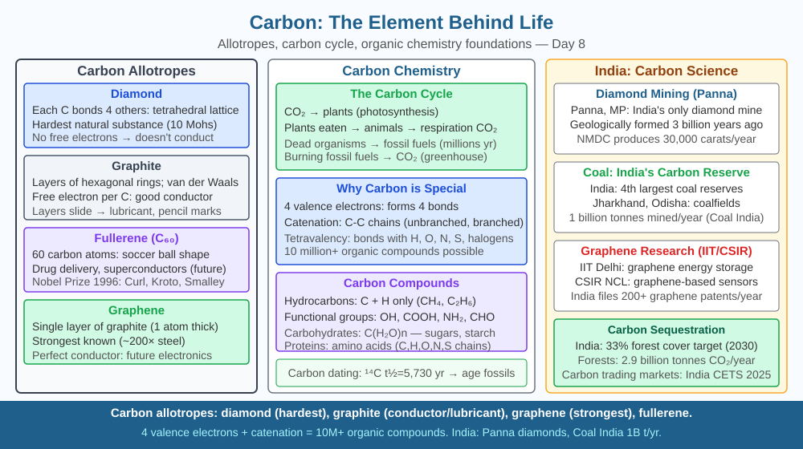

By the end of this lesson, you should be able to explain why carbon's four covalent bonds make it uniquely suited to form the large, complex molecules that life requires, and predict what would happen to biological diversity if carbon could only form two bonds.
Your body contains roughly 7 × 10²⁷ atoms — and about 60% of them, by mass, are carbon. Every protein in your muscles, every strand of DNA in your cells, the glucose running through your blood, the haemoglobin carrying oxygen in your red blood cells — all are built on a backbone of carbon atoms. There are over 10 million known carbon compounds, compared to fewer than a million compounds made from all other 117 elements combined. Carbon is the sixth element in the periodic table, nothing chemically exotic. So why does life pick this one element above all others as its structural foundation?
The answer lies entirely in carbon's electron configuration and the type of bonding it forms.
Carbon's electron configuration and valence. Carbon has atomic number 6. Its electron configuration is 2, 4 — two electrons in the first shell and four electrons in the outer (valence) shell. To achieve a stable octet (eight electrons in the outer shell), carbon needs to share four more electrons. It does this by forming four covalent bonds — one of the highest numbers of bonds any small atom can form. This property is called tetravalency.
What four bonds make possible. A carbon atom with four bonds can link to: - Four other carbon atoms (forming a straight or branched chain) - Two other carbon atoms and two hydrogen atoms (as in any link in a hydrocarbon chain) - Other elements: oxygen (in alcohols, aldehydes, acids), nitrogen (in amino acids, DNA bases), sulfur, phosphorus
Because each bond is a covalent bond — a shared pair of electrons — it is strong enough to persist at body temperature (37°C) and across a wide range of biological conditions. The carbon–carbon (C–C) single bond energy is about 347 kJ/mol; the C=C double bond is about 614 kJ/mol. These bonds are stable enough to hold large molecules together but reactive enough to be broken and reformed by enzymes in biochemical reactions.
Why chains, rings, and branches form. With four bonds, each carbon can bond to two or three other carbons and still have bonds left over for hydrogen or other atoms. This allows:
Each structural variation produces a different molecule with different properties. Glucose (C₆H₁₂O₆) and fructose (C₆H₁₂O₆) have the same molecular formula but different structural arrangements — different three-dimensional shapes, different sweetness, different reactivity. Life exploits this precision.
Why not silicon? Silicon is directly below carbon in the periodic table and also has four valence electrons. It can also form four covalent bonds. Science fiction writers have imagined silicon-based life. But silicon has two critical limitations at the temperatures where Earth life operates. First, the silicon–oxygen bond is so strong that silicon dioxide (SiO₂, sand) is a solid at room temperature, while carbon dioxide (CO₂) is a gas — making carbon the only one that can be exhaled and recycled through the atmosphere. Second, silicon–silicon bonds (Si–Si) are significantly weaker and less stable than C–C bonds at biological temperatures, limiting chain length. The biochemical machinery of enzymes — which must precisely grip, bend, and break bonds — works on carbon's geometry; silicon's larger atomic radius means the geometry does not fit.
Carbon in biological molecules: Proteins are amino-acid chains linked by C–N peptide bonds; DNA uses a 5-carbon deoxyribose ring and carbon-nitrogen bases; fats are long carbon chains; glucose is a 6-carbon ring powering cellular respiration. Every major class of biological molecule is a carbon backbone with different functional groups attached.
Think of carbon as a four-armed connector piece in a molecular building set:
Increase the number of carbons in the chain and the molecule gets longer. Branch the chain and you get different shapes. Close the chain into a ring and you get cyclic molecules. Add a double bond and the molecule becomes flat and reactive at that point.
The key equation for life: 4 bonds + carbon's small size + C–C stability = unlimited structural variety at biological temperatures.
If carbon had only 2 valence electrons (like oxygen) or only 1 (like hydrogen), chains and rings could not form. If carbon's bonds were too weak (like Si–Si), they would break spontaneously at body temperature. Tetravalency with strong, stable covalent bonds is the specific combination that makes life's chemistry possible.
The included SVG shows three panels:

Nitrogen has five valence electrons and forms three covalent bonds; oxygen forms two; hydrogen forms one.
Using the four-bonds logic for carbon, explain why nitrogen cannot serve as a backbone element of life even though it is abundant and appears in every amino acid and DNA base. How long a stable nitrogen–nitrogen chain could you build? What does forming only three bonds prevent? Compare the structural possibilities available to nitrogen with those available to carbon.
Why is carbon called the element behind life?
Correct answer: b
Why is understanding carbon's bonding mechanism more useful than memorising its uses?
Correct answer: a
What would happen to life on Earth if carbon could only form two bonds instead of four?
Correct answer: c
Explain today's concept to a younger student in 60 seconds without technical jargon. Then explain it again using the correct scientific vocabulary.
If both explanations describe the same mechanism, you have understood the concept rather than memorised it.
Diamond and graphite are both made entirely of carbon atoms — nothing else. In diamond, each carbon uses all four bonds to connect to four other carbons in a rigid tetrahedral network; no electrons are free, light cannot pass through, and the structure is extraordinarily hard. In graphite, each carbon uses only three of its four bonds for the flat hexagonal sheet; the fourth electron from every carbon is delocalised across the sheet, making graphite conduct electricity and giving it its slippery, metallic sheen. The same element, the same four bonds — but arranged differently — produces the hardest natural substance and a useful electrical conductor. Tetravalency is the single feature that produces both.
Carbon is the element behind life because its four covalent bonds (tetravalency) allow it to form straight chains, branched chains, and ring structures of almost unlimited size — giving rise to the proteins, DNA, fats, and sugars that make up every living cell, which would be impossible if carbon could form only two bonds.